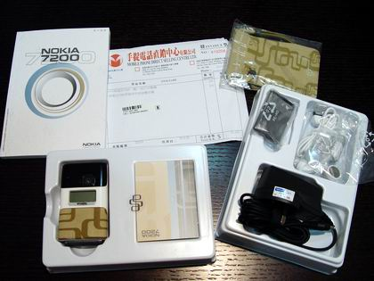

未知数 @ Jun 03, 2004
下午和GRACE、F见了面，在东大四周及北极阁附近散步聊天，然后一起吃晚饭。
GRACE10号返港，F9月初去法国，他们的前程在一片灿烂的未知数里荡漾。
这种循序渐进剥离的生活令我不安，GRACE和我共同生活的感受已经越来越少，将来我们又是以什么来维系彼此间的友谊？希望她能一直存在于我的生命中，我担心失去她，好似担心失去精神空气的感觉！Y 公司的事情太忙，没能来，但在数码相机里看见他剔短的头发，穿着黑衣牛仔裤，有些艺术家的风范了。GRACE瘦了许多，她亦不允许我多说她的瘦。
我？为何什么事情都没做，却觉得时间短缺得令人恐惧？
早晨起床，根本无法达到自然醒的效果，事实上我已经很久没有在家晚上上网了。
上班总担心迟到，等车和塞车的时间总是那么漫长。
和妞妞呆在一起的时间总是非常短，离开家急急忙忙上班，回到家浑身疲惫想看喜欢的电视连续剧想睡觉，哪有时间带她出去遛。
想看背包里的那本书，总是没心情没时间，背来背去很多回，最后还是无奈的摆放在书架最显眼的位置，好随手拈来。
手机待机时间总是那么短，没几个短信和电话，有电的兰色显示已经少了许多。
一晃眼就要30岁了，最害怕工作不忙，而我恰恰是工作之后忙，工作的时候不忙。所以工作之后的时间总是不够用。
想做到无欲则刚，那么：
如果你不在意钱，别人无法在钱上带给你压力。
如果你每天按照规则做事，别人亦无法给你小鞋穿。
如果你什么事情都不犯错，别人想搞你的时候照样搞。
所以，无欲则刚只能作为形容传统问题使用。
晚上讨论到《任逍遥》这部电影，中国没通过审批，打算去市场上淘张盗版碟回来瞧瞧。
一天没打电话了，不知这手机是死还是活？

—GRACE帮我带的新手机
No Responses to “未知数”
Leave A Reply
存档只读，评论已关闭。